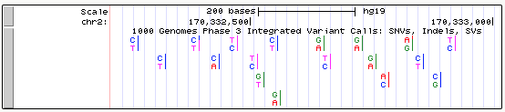
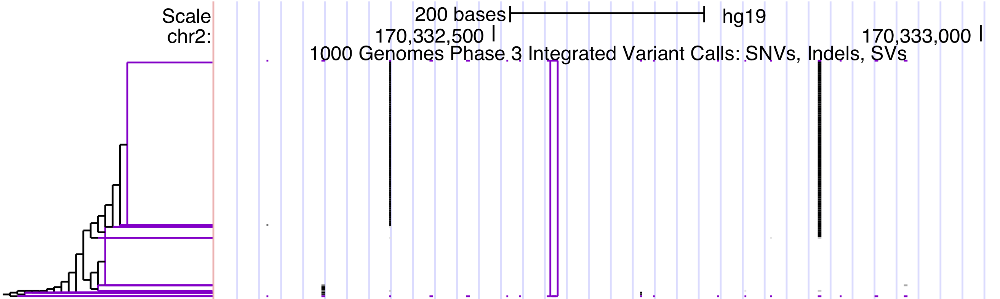
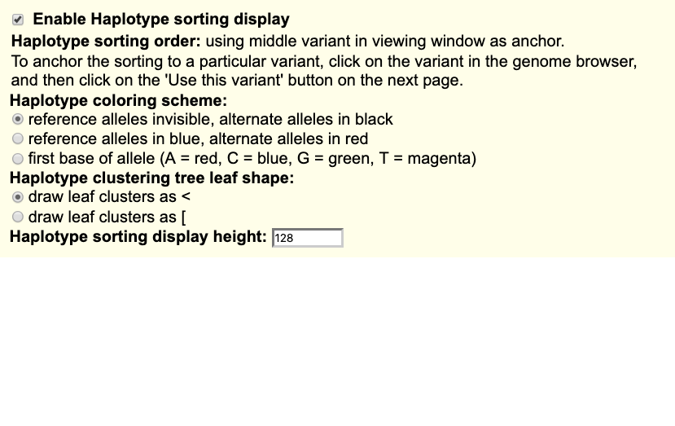
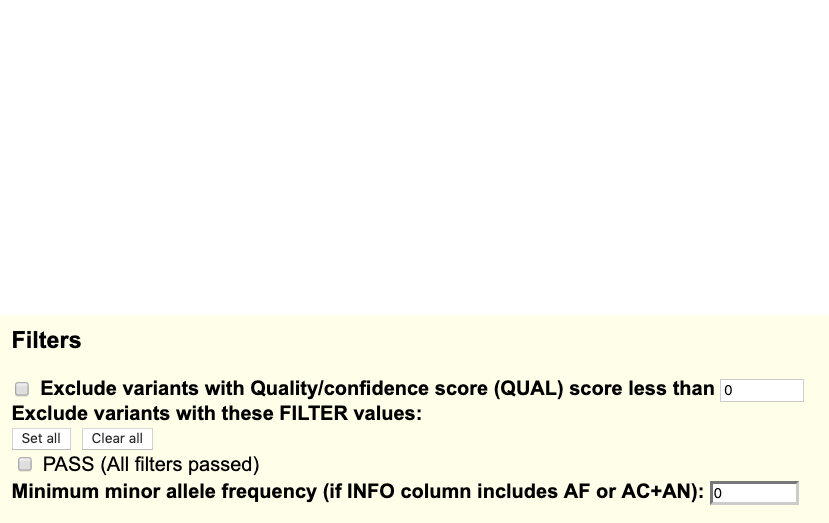

Genome Browser VCF tracks may be configured in a variety of ways to highlight different aspects of the displayed information. By default, VCFs will display alleles with base-specific coloring. Homozygote data are shown as one letter, while heterozygotes will be displayed with both letters.

The default VCF custom track will display colored bases and will not show clustering unless specified as VCF/tabix in the custom track page.
The following section describes configuration settings available to VCF files compressed and indexed in the Tabix format. This requires VCF manipulation, separate index files, and a web accessible directory to reference from the bigDataUrl track line. For more information on setting up and uploading VCF/Tabix data, click the link on VCF custom track creation.
If the VCF file contains genotype columns for at least two samples (four haplotypes), then a haplotype sorting display can be configured. This can be useful for determining the similarity between the samples and inferring inheritance at a particular locus.
Enable Haplotype sorting display: When this option is checked, each sample's phased and/or homozygous genotypes are split into haplotypes, clustered by similarity around a central variant, and sorted for display by their position in the clustering tree. The tree (as space allows) is drawn in the label area next to the track image. Leaf clusters, in which all haplotypes are identical (at least for the variants used in clustering), are colored purple.
The haplotype tree can be seen to the left of the track.
Each variant is drawn as a vertical column, using color to distinguish between reference alleles and alternate alleles of the horizontally running haplotypes. If unchecked, then the display is the same as for VCF without genotypes: a stacked bar graph of the top two alleles, showing the proportion of alleles if allele counts are available. This setting is enabled by default.
The following options are applicable only when the haplotype sorting display is enabled:
Haplotype sorting order: Haplotypes are sorted using a distance function that uses a central variant. Differences between haplotypes are penalized with weights that decrease for each successive variant away from the central variant. By default, the median variant in the window is used. By clicking on a variant in the display, you will get the option to always use that variant when it is in the current view.
Haplotype coloring scheme: There are three ways that reference and alternate alleles can be colored:
In all coloring modes, if some alleles in a haplotype are undefined, a pale yellowish color is used for those alleles.
Haplotype clustering leaf shape: Leaf clusters are collections of identical haplotypes. By default, they are drawn as open triangles <. They can also be displayed as open rectangles [.

Haplotype sorting display height: This number represents the track height in pixels. If the number of pixels is fewer than the number of haplotypes (2 * the number of genotype columns), some horizontal pixel rows must represent multiple haplotypes; with differing haplotypes' colors combined according to the selected coloring scheme.

Variants can be filtered out of the display according to several properties:

When you have finished making your configuration changes, click the button to return to the annotation track display page.